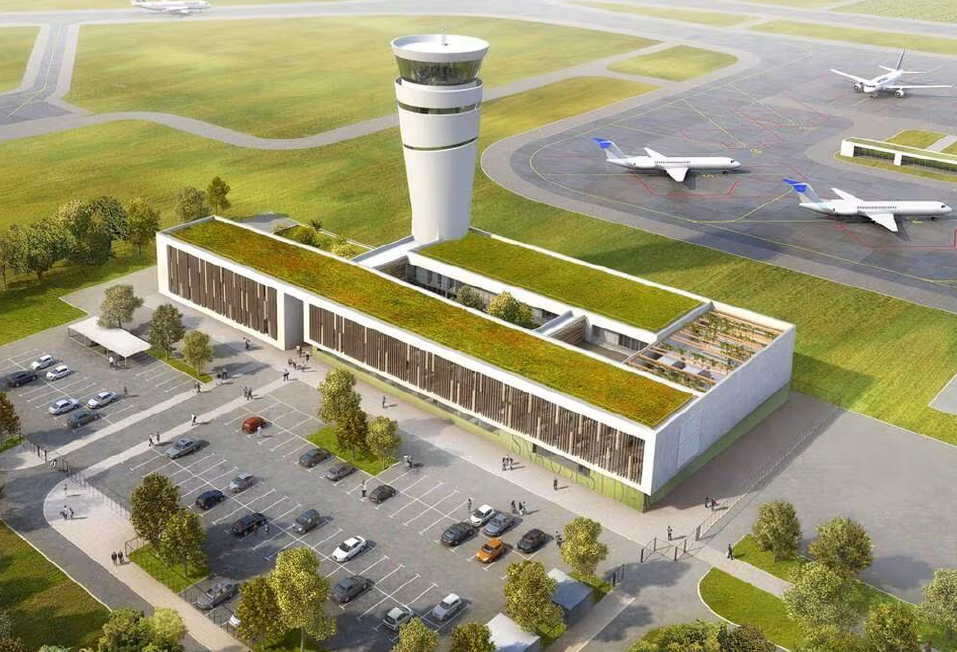
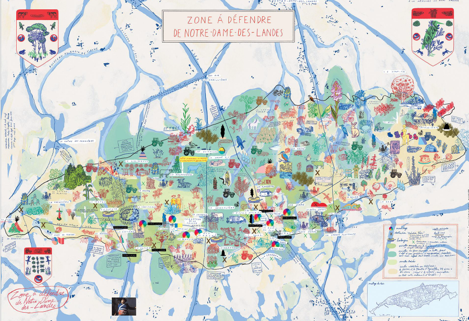
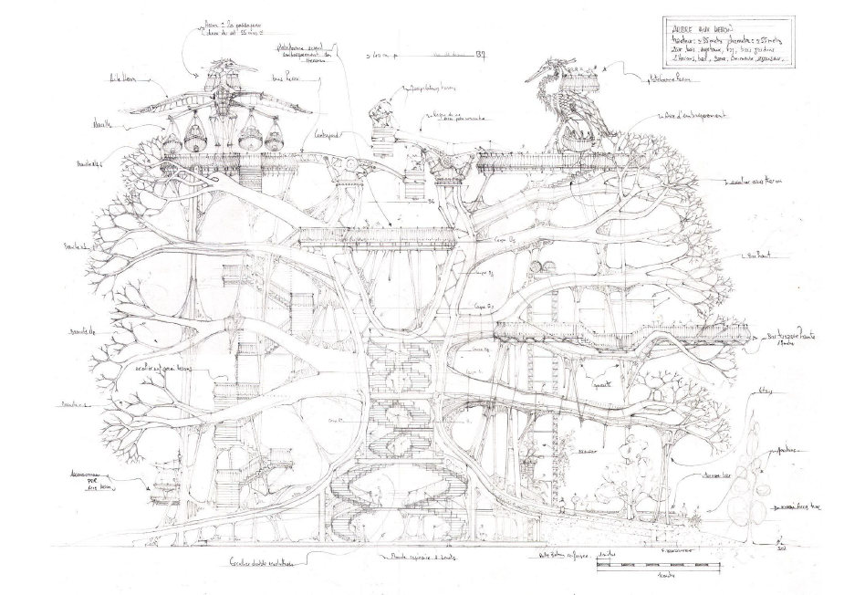
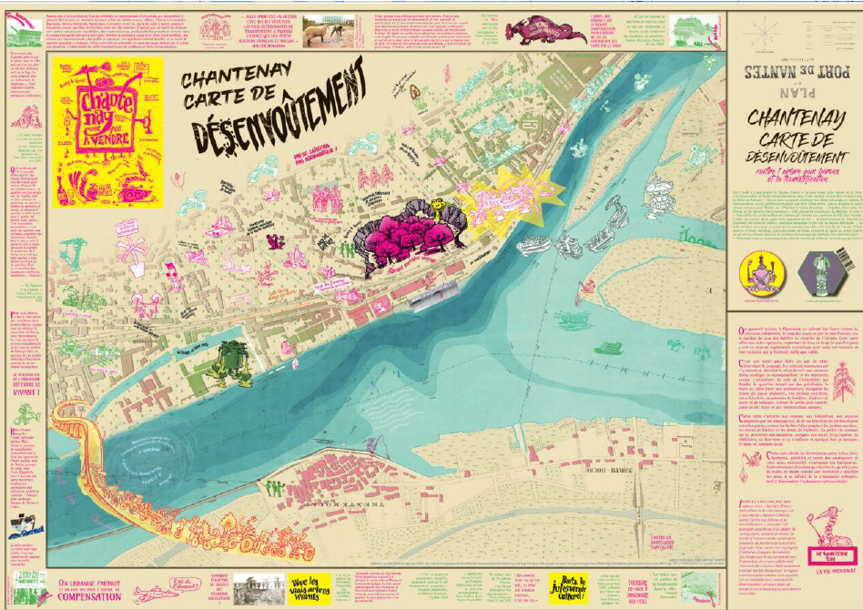
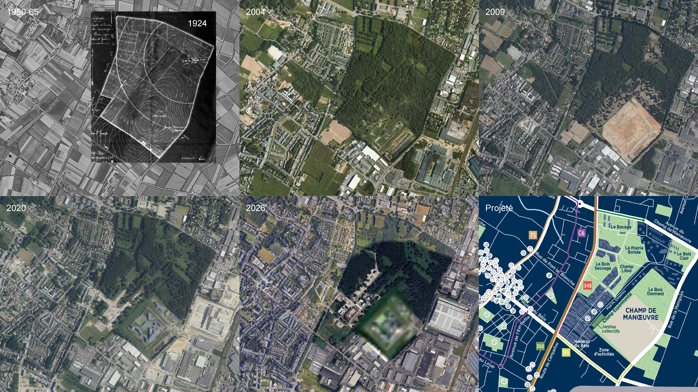

Tableau nantais d'une critique environnem-anticapitalo-politico-démocrato-nébuleuse écosystè-mondialisado-étatico-métropolitico-urbanistico-architecturale
Un gars laxique
Club ASAP 10
avril 2026
Temps de lecture : 05 min
Le 11 décembre 2025, l’exposition “Contre-projets Penser le contre, réaliser le pour” est inaugurée.
Portée par le Mouvement pour une frugalité heureuse et créative et archipel, association composée de La Maison de l’architecture Rhône-Alpes et d’une librairie indépendante, elle présente des contre-projets à travers la France dans une vision à la croisée des mondes architecturaux et de lutte écologistes.
On y produit une version plus analytique de la carte de reporterre (ci-contre) contre les grands projets inutiles imposés. Ces outils témoignent d’un “Mouvement social qui s’ignore de moins en moins”, expression empruntée à Kevin Vacher, sociologue au laboratoire d’éducation populaire et tirée de l’étude “Les Davids s’organisent contre Goliath. État des lieux des mobilisations locales contre les projets inutiles, imposés et polluants en France” réalisée pour les associations ZEA, Notre Affaire À Tous, Terres de Luttes en 2021.
Nantes et le territoire ligérien ne font pas exception et sont même des lieux de critique architecturo-environnementale forte.
On citera pêle-mêle les grands projets du cochon volant de Notre-Dame-des-Landes, l’Arbre aux hérons, le stade YellowPark, la ZAC Doulon-Gohards… Avortés ou non, ces projets sont des exemples de lieux où se forme une forme d’expertise citoyenne et où se développent des pratiques d’habiter et des outils de transformation de l’espace.


En bas : Zone à défendre de Notre-Dame des Landes, A la criée 2016


En bas : Chantenay, carte de désenvoutement, A la criée 2022
Aujourd’hui, un lieu de cette critique nantaise est la zone du Champ de Manoeuvre, territoire de 75ha au nord-est de Nantes.
Ancien pays de culture où habitaient fermes, tenues maraîchères, prairies, vigne et arbres fruitiers, la zone voit au début du 20e siècle débarquer un terrain militaire pour remplacer celui du Petit Port. La deuxième moitié du siècle est celle de l’urbanisation des terres alentour et du départ des militaires laissant des écosystèmes se (re)constituer sur les terres polluées par les engins pyrotechniques.
En 2012, une maison d’arrêt remplaçant celle surchargée et insalubre jouxtant la place Aristide Briand y ouvre, rasant une dizaine d’hectares de forêt au sud-est de la zone.
En parallèle s’y monte un dossier de ZAC lancé lors du conseil métropolitain du 29 juin 2015. Perçue comme “l’une des dernières réserves foncières du secteur nord-est de Nantes”, 1800 à 2000 logements y sont envisagés.
À ce jour une quelque centaine de logements sont construits et un millier est prévu en plus. On doit ça entre autres à Bohuon Bertic, JBA, Garo Boixel, DLW, THE, Atelier Mima, Vera et associés, Bauchet & de la Bouvrie, Palast, Dumont Legrand, Tact, Ylé, Loom, Barré Lambot, pour ne pas les citer.

Cette ZAC est critiquée par les membres de l’ARALB, Association des Riverains et Amis de La Beaujoire, qui se documentent en lisant les documents de la ZAC, des articles scientifiques…, interpellent les élues et les pouvoirs publics, mènent des actions juridiques contre les constructions, partagent le résultat de leur recherche sur internet, via un blog, les réseaux sociaux mais aussi des évènements, organisent des balades sur le lieu ouvertes à tout le monde
Le travail bénévole qu’iels réalisent les mènent à dresser une critique d’une architecture résignée, immobilisée dans ses contraintes et qui peine à se désengluer d’un système de dominations. Iels créent à travers cette enquête, des pratiques d’habiter qui nous offrent l’espace d’y réfléchir. Voici quelques unes de leurs observations :

le vieux four militaire seul vestige construit de la mémoire du site, les rayons de la lune transperçant un des bâtiments en chantier et se reflétant sur la route, le vieux chêne qui a poussé paisiblement, la voiture lancée sur la route de carquefou inondée à cause de la tête de bassin versant artificialisée, la salamandre écrasée en train de traverser la rue du chêne jaunais fraîchement coulée, le chien au milieu d’une zone plus ou moins humide devant la cabane aux moutons, le champignon sur la mousse photographié et mis sur ENaturalist pour suivre l’évolution des populations de la zone, la forêt de panneaux des entreprises de travaux.
les pas de chevreuils dans la neige, la parcelle délimitée raclée pour accueillir un futur programme de logements, le camion rossi avec un slogan promesse d’un carrelage qui rendra votre vie meilleure.
les feuilles de chênes mortes envahissant la renouée du japon transperçant les bâches de compensation environnementale, la grue coiffant de terra stilla, la prairie à nue après le passage des gyrobroyeurs, l'installation des passages à faune en béton après les demandes répétées, la cabane-camp à oiseau-réfugiées installée en compensation de la destruction de leur habitat
L'ensemble des articles issus du club asap 10 sont disponibles ci-dessous:
| # | Titre | Auteur | |
|---|---|---|---|
| 100 | Les styles de la critique | Hugo Forté | Club #10 |
| 101 | L'oeuvre critique | Maxime La Goutte | Club #10 |
| 102 | Démanteler le spectre post-critique | Louis Fiolleau | Club #10 |
| 103 | The backrooms, une fiction critique populaire | Titouan Gracia | Club #10 |
| 104 | What you read is what you get | Hugo Forté | Club #10 |
| 105 | Un problème chez ASAP | Herzgeg & Deux Neurones | Club #10 |
| 106 | Tableau nantais d'une critique | Un gars laxique | Club #10 |